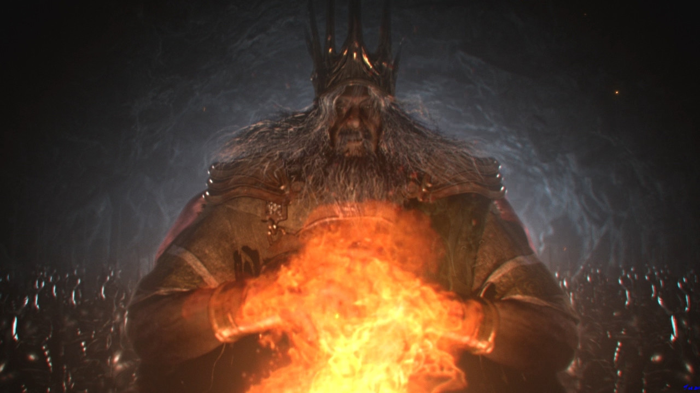

A central element to the gameplay of Dark Souls is thebonfire. Bonfires are scattered throughout the world and serve as checkpoints for each level. By resting at a bonfire, the player character is healed to full and regains all of the healing charges of their "Estus Flask." They can also level up and perform other functions, such as attuning magic and repairing and upgrading equipment. However, resting at a bonfire respawns all of the world's enemies, except for bosses, mini-bosses, and friendly non-playable characters.
The player character's interaction with the world of Dark Souls includes a great deal of combat. Combat includes melee attacks, various forms of defensive maneuvering, and magical abilities. For melee attacks, player characters have access to a wide array of high fantasy, medieval-style weaponry—including swords, spears, maces, and fantastical weaponry such as magical swords, huge greatswords, and immense clubs. For defence, player characters have access to shields, armour, dodging, and parrying. For magic, which includes a wide variety of offensive and defensive abilities known as sorceries, miracles, and pyromancies, player characters do not use any form of mana as in most other fantasy RPGs. Instead, they gain a discrete number of uses for each attuned spell when resting at a bonfire. These various forms of combat all have tradeoffs, variations, and in-game costs associated with them. They can all be buffed or altered in some fashion through levelling, smithing, consumable items, magical rings, and new equipment.
The opening cutscene establishes the premise of the game. Dragons once ruled the world during the "Age of Ancients." A primordial fire known as the First Flame manifests in the world, establishing a distinction between life and death, and light and dark. Four beings find "Lord Souls" near the First Flame, granting immense power: Gwyn the Lord of Sunlight, Nito the First of the Dead, the Witch of Izalith, and the Furtive Pygmy. Gwyn, Nito, and the Witch use their new power to destroy the dragons and take control over the world, while the Furtive Pygmy is said to be forgotten, and thus begins the "Age of Fire." Over time, as the First Flame begins to fade while humans rise in power, Gwyn sacrifices himself to prolong the Age of Fire. The main story takes place towards the end of this second Age of Fire, at which point humanity is said to be afflicted with an undead curse related to a symbol on their bodies known as the Darksign. Those humans afflicted with the undead curse perpetually resurrect after death until they eventually lose their minds, a process referred to as "hollowing."
The player character is a cursed undead, locked away in an undead asylum. After escaping the asylum, the player travels to Lordran to ring the Bells of Awakening. The bells awaken Kingseeker Frampt, who tells the player to ascend to Anor Londo, the home of the Gods. In Anor Londo, Gwynevere instructs the player to succeed Lord Gwyn and fulfil the prophecy. To accomplish this, the player must acquire the Lord Souls of the Witch of Izalith, Nito, and shards of Gwyn's own Lord Soul given to the Four Kings, and to the dragon Seath the Scaleless. Optionally, the player may encounter Darkstalker Kaathe, who encourages the player not to link the fire but to let it die out and usher in the Age of Dark instead, due to humanity being created from the Furtive Pygmy's own Dark Soul. Once the player acquires the Lord Souls, they travel to the Kiln of the First Flame to battle Gwyn. Once Gwyn has been defeated, the player has the choice of linking the flame to preserve the Age of Fire or letting it die out to instigate the Age of Dark.
